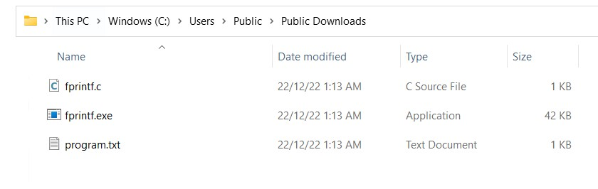
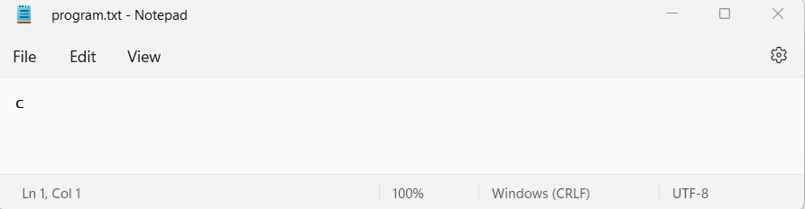
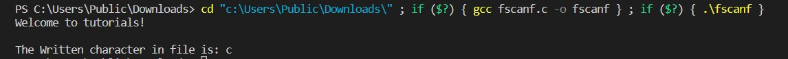
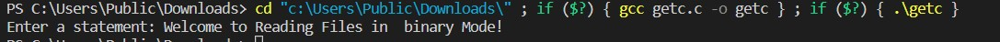
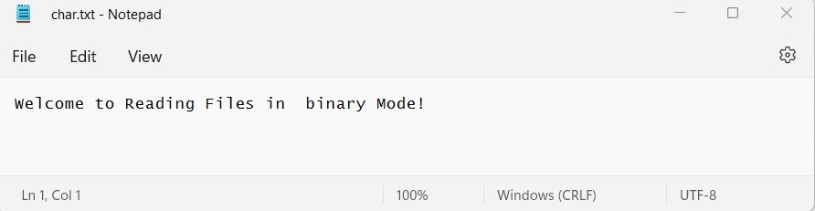

CHAPTER 12
Connecting to the real world: files and streams
Topics:
Introduction to files and streams
A file is nothing but a source of storing information permanently in the form of a sequence of bytes on a disk. The contents of a file are not volatile like the C compiler memory. The various operations available like creating a file, opening a file, reading a file or manipulating data inside a file is referred to as file handling.
Different Types of Files in C
When talking about files with reference to file handling, we generally refer it to as data files. There are basically 2 distinct types of data files available in the C programming language:
Text files
These are the simplest files a user can create when dealing with file handling in C. It is created with a .txt extension using any simple text editor. Generally, we use notepads to create text files.A text file stores information in the form of ASCII characters internally, but when you open the text file, you would find the content of the text readable to humans. Hence, it is safe to say that text files are simple to use and access. But, along with advantages comes disadvantages as well. Since it is easily readable, it does not provide any security of information. Moreover, it consumes large storage space. Hence, there is a different type of file available called binary files which helps us solve this problem.Binary files
A binary file stores information in the form of the binary number system (0's and 1's) and hence occupies less storage space. In simple words, it stores information in the same way as the information is held in computer memory. Therefore, it proves to be much easier to access. It is created with a .bin extension. It overcomes the drawback offered by text files. Since it is not readable to humans, the information is more secure. Hence, it is safe to say that binary files prove to be the best way to store information in a data file.C File Handling Operations
The C programming offers various operations associated with file handling. They are:- Creating a new file: fopen()
- Opening an existing file in your system: fopen()
- Closing a file: fclose()
- Reading characters from a line: getc()
- Writing characters in a file: putc()
- Reading a set of data from a file: fscanf()
- Writing a set of data in a file: fprintf()
- Reading an integral value from a file: getw()
- Writing an integral value in a file: putw()
- Setting a desired position in the file: fseek()
- Getting the current position in the file: ftell()
- Setting the position at the beginning point: rewind()
It is important to note that a file-type pointer needs to be declared when working with files. It
establishes communication between the file and the program.
This is how it is done:
FILE *fpointer;
Out of these various operations, there are some basic operations used in the C programming language which we will discuss in detail one by one:
Opening a Text File in C
We use the fopen() function to create or open a file as mentioned earlier. It is pretty obvious that creating or opening a file is the first step in file handling. Once the file has been created, it can be opened, modified or deleted.
The basic syntax of opening a file is:*fpointer = FILE *fopen(const char *file_name, const char *mode);
Here,
*fpointer is the pointer to the file that establishes a connection between the file and the program.
*file_name is the name of the file.
*mode is the mode in which we want to open our file.
| MODE | ELUCIDATION |
|---|---|
| r | We use it to open a text file in reading mode |
| w | We use it to open or create a text file in writing mode |
| a | We use it to open a text file in append mode |
| r+ | We use it to open a text file in both reading and writing mode |
| w+ | We use it to open a text file in both reading and writing mode |
| a+ | We use it to open a text file in both reading and writing mode |
| rb | We use it to open a binary file in reading mode |
| wb | We use it to open or create a binary file in writing mode |
| ab | We use it to open a binary file in append mode |
| rb+ | We use it to open a binary file in both reading and writing mode |
| wb+ | We use it to open a binary file in both reading and writing mode |
| ab+ | We use it to open a binary file in both reading and writing mode |
Closing a Text File in C
We use the fclose() function to close a file that is already open. It is pretty obvious that the file needs to be opened so that the operation to close a file can be performed.int fclose( FILE *fpointer);
Here, the fpointer is the pointer associated with closing the file. This function is responsible for returning the value 0 if the file is closed successfully. Otherwise, EOF (end of file) in case of any error while closing the file.
Reading and Writing a Text File in C
After discussing how to open and close a file, it is important to note that there are 3 types of streams (sequence of bytes) in a file:
- Input
- Output
- Input / Output
The input/output operations in a file help you read and write in a file. The simplest functions used while performing operations on reading and writing characters in a file are getc() and putc() respectively. In order to read and write a set of data in a file, we use the fscanf() and fprintf() operators.
Program in C that illustrates the use of fprintf() to write a text file:
#include < stdio.h >
#include < stdlib.h >
int main()
{
printf("Welcome to tutorials!\n\n");
char character;
FILE *fpointer;
fpointer = fopen("C:\\Users\\Public\\Downloads\\program.txt","w"); // Here "w" refers to write on file
if(fpointer == NULL)
{
printf("Error! The file does not exist.");
exit(0);
}
printf("Enter a character: ");
scanf("%c",&character);
fprintf(fpointer,"%c",character); // Use of fprintf() function
fclose(fpointer);
return 0;
}
After successfully compiling the above code, a text file would be generated in our specified location C:\Users\Public\Downloads Directory.
When we open the text file, it would display the character entered in the program:
After developing an understanding of how to write in a file, let us proceed with how to read a line.
Here is a program in C that illustrates the use of fscanf() to read a text file:
#include< stdio.h >
#include< stdlib.h >
int main()
{
printf("Welcome to tutorials!\n\n");
char character;
FILE *fpointer;
if ((fpointer = fopen("C:\\Users\\Public\\Downloads\\program.txt","r")) == NULL)
{
printf("Error! The file does not exist.");
exit(0);
}
fscanf(fpointer,"%c", &character);
printf("The Written character in file is: %c", character);
fclose(fpointer);
return 0;
}

Now, let us try to understand the difference between the write mode and append mode
Although they have seemingly similar functions, there are some differences between the two.
The write mode is denoted by “w” whereas the append mode is denoted by “a”.
Using the write mode, you may lose data. When you run your program for the second time, the system overwrites
the new output produced by the program if the user gives a different input than the one given in the previous
program.
In contrast to this situation, the append mode simply adds more data to the existing data. Therefore, from this
discussion, it is evident that the append mode is better than the write mode.
After understanding some of the basic operations in text files, let us carry on our discussion forward on
binary files. We can open and close the binary file in a similar fashion like text files. The difference arises
while reading and writing in a binary file.
Reading and Writing a Binary File in C
We use the fread() and fwrite() function to read and write data from a binary file respectively.
Working with binary files is a bit more complicated than working with text files as the syntax involves the use
of more arguments.
The basic syntax for reading a binary file in C is:
fread(data_address, data_size, number_of_data_items, file_pointer);
The basic syntax for writing in a binary file in C is:
fwrite(data_address, data_size, number_of_data_items,file_pointer);
Here is a program in C that illustrates how to read a binary file in C:
#include <stdio.h>
#include <stdlib.h>
struct example
{
int x;
};
int main()
{
printf("Welcome to tutorials!\n");
int i;
FILE *pointer;
struct example e;
e.x = 100;
pointer = fopen("C:\\Users\\Public\\Downloads\\example.bin","rb"); // Here "rd" denotes read binary file
if(!pointer)
{
printf("Error! The file does not exist.");
exit(0);
}
for(i = 0; i < 3; i++) // for loop to display the value of e.x 3 times
{
fread(&e, sizeof(struct example),1 ,pointer);
printf("%d ",e.x);
}
fclose(pointer); return 0;
}
/* Written in file A then read it 3 times in binary mode and produces 65 as result */
In a similar fashion, you can write content in a binary file using the fwrite() function.
Here is a program in C that illustrates how to write in a binary file:
#include <stdio.h >
#include <stdlib.h>
int main()
{
char line[1000];
FILE *fpointer;
fpointer = fopen("c:\\Users\\Public\\Downloads\\char.txt", "w");
if(fpointer == NULL)
{
printf("Error!");
exit(0);
}
printf("Enter a statement: ");
fgets(line,1000,stdin);
fprintf(fpointer,"%s", line);
fclose(fpointer);
return 0;
}
Output:-
This is how the output of the file is stored into the text file:
Chapter 12 Quiz